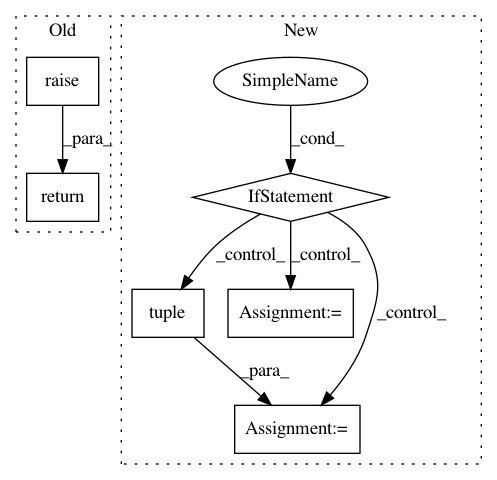

19a19478d2dc1cdff7321f156512f66dbd6c5dd6,dataset/batch.py,ImagesBatch,load,#ImagesBatch#Any#Any#,224
Before Change
Batch class for 2D images
@action
def load(self, src, fmt=None):
return super().load(src, fmt)
After Change
def load(self, src, fmt=None):
Load data
if fmt is None:
if isinstance(src, tuple):
self._data = tuple(src[i][self.indices] if len(src) > i else None for i in range(3))
else:
self._data = src[self.indices], None, None
else:
raise ValueError("Unsupported format:", fmt)
return self
In pattern: SUPERPATTERN
Frequency: 3
Non-data size: 6
Instances
Project Name: analysiscenter/batchflow
Commit Name: 19a19478d2dc1cdff7321f156512f66dbd6c5dd6
Time: 2017-06-07
Author: rhudor@gmail.com
File Name: dataset/batch.py
Class Name: ImagesBatch
Method Name: load
Project Name: OpenNMT/OpenNMT-tf
Commit Name: 30efaaa572d798212c926e5b2edbf2b0fe7fa2f1
Time: 2019-07-15
Author: guillaume.klein@systrangroup.com
File Name: opennmt/decoders/rnn_decoder.py
Class Name: AttentionalRNNDecoder
Method Name: _get_initial_state
Project Name: cornellius-gp/gpytorch
Commit Name: ccc913a65e08bc5523eb2490d3177c472b55d094
Time: 2018-02-01
Author: gpleiss@gmail.com
File Name: gpytorch/lazy/sum_batch_lazy_variable.py
Class Name: SumBatchLazyVariable
Method Name: __getitem__